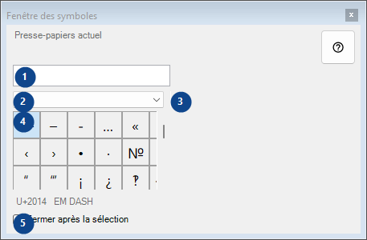
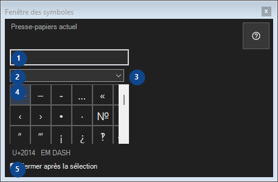

Fenêtre des symboles
À quoi cela sert
Palette de caractères rares : un clic copie le caractère dans le presse-papiers ; tout reste sur cet ordinateur.


Ordre des actions
Lisez les explications numérotées, choisissez les valeurs voulues, puis continuez avec la commande de la fenêtre.
Éléments
1. Presse-papiers actuel
Presse-papiers actuel
Vos raccourcis2. Jeu de symboles
Jeu de symboles
Vos raccourcis3. Rechercher des symboles
Rechercher par nom, mots-clés ou code Unicode
Vos raccourcis4. Grille de symboles
U+2014 EM DASH
Vos raccourcis5. Fermer après la sélection
Fermer après la sélection
Vos raccourcis